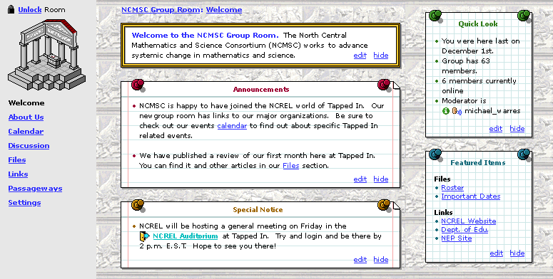
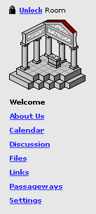

When a visitor or owner of a room enters any room (individual room, group room, or course room) through a passageway or by any other means, they will land in the Welcome page of the room.[1]
The welcome area of a room contains customizable content set by the room's owner. This content is displayed in "sticky notes" on top of a wallpaper theme that the user has selected (or that was set by default). [1]
The image below shows how a room looks to an owner when he/she enters it. Notice the edit and hide options on the sticky notes. These are only available to the owner of a room, not visitors. A visitor will see the same content when she enters the room, except without edit options.[1]

Sticky Notes
There are 5 sticky note types available to and editably by a room owner. Each editable note has a small edit button, which when clicked, takes the user to an edit screen. Each note also has a hide button which when clicked, hides the note from view. Hidden notes can be made visible again in Settings.
The available sticky note types, default visibility on room creation, and default values on room creation are as follows:
| Note Type | Description | Default Visability on room creation | Default value |
| Welcome Text [1] | Any welcome information or room description that an owner wants ot set on a room. This information is available in the Room Directory or in searches for a room. | Visible | For individual offices: "Welcome to <member name's> office." |
| Announcements [2] | Recent announcements a room owner may want to make for visitors; most applicable to Groups or Courses | Invisible | none |
| Featured Items [2] | A list of featured passageways, files, and links for this room | Visible | 2 values: Link to TAPPED IN Passageway to Reception |
| Quick Look [2] | Statistics and other canned information, for Groups or Courses only (not individual offices) | Not available on individual rooms Visible on courses and groups |
Number of group members for courses and groups |
| Generic Note (up to 3) [1] | Generic note in which the owner can set the title and content. Up to 3 can be displayed in the Welcome area. |
1 default note visible on individual rooms None visible on courses and groups |
On individual offices, one note titled "Congratulations"
that says: "Congratuations on your new office! To personalize the content of the Welcome area, click on Settings. To hide this note, click the little hide link." |
| Generic Image (up to 3) [2] | Generic image in which the owner can upload an image and set the title and an annotation. Up to 3 can be displayed in the Welcome area. | None visible | none |
These layout manager for these notes is still under discussion. Be default, they could be layed out in a pre-specified order in one of two columns. Rearrangement of note order and position is possible [2] but will likely not be supported in the first release.
If a user clicks on the edit button for a note type, an edit screen is presented. The edit screen for each not type will be discussed in turn, below.
Welcome Text - Editing [1]
If the room owner clicks the edit link on the Welcome note, she will see a page with a text field in which she can edit the Welcome message text.. [1]
|  | Edit
the Welcome Text for this room |
Announcements - Editing [2]
If the room owner clicks the edit link on the Announcements note, she will see a page like the following.
As with passageways, links, and files, she just clicks on the delete link beside an announcement to delete it [2], and check or uncheck an announcement to make it visible [3]
To add a new announcement,, the owner clicks the add announcement button.The owner can add new announcements up to a limit of 20 announcements [2]. When 20 passageways out of the room exist, the add announement link no longer appears. In its place, a message appears that says:
No more than 20 announcement can be defined on a room.
When a room owner adds an announcement, she is presented with a text field into which she can type an announement, and press the Submit button. [2]
Edit
the Announcements for this room
|
Featured Items - Editing [2]
If the room owner clicks the edit link on the Featured Items note, she will see a page like the following. Items that can be featured include files, links, and passageways. [2]
To edit or add items to the Featured Items list, the owner clicks the button for the item type that she wants to edit. This will take her to the normal page for the selected type. So, for example, if she clicks on Featured Passageways, she will be presented with the Passageways page––the same page as if she had clicked the Passageways link in the left navigation area. See the Passageways specification for further information on how passageways are added, deleted, and featured.
|
Edit Featured
Items for this room Featured Files: Roster Featured Links: NCREL Website Featured Passageways: <none>
|
Quick Look - Editing [2]
If the room owner clicks the edit link on the Quick Look note (group and course rooms only), she will see a page like the following.
To add or remove items from the Quick Look note, the user checks or unchecks options and presses the button put checked items in your Quick Look.
|
Edit Quick
Look Show total number of members in this group Show number of group members online right now Show group moderator's name Show last time the user was in this room
|
Generic Note- Editing [1]
If the room owner clicks the edit link on a generic note, she will see a page with a field into which she can type a title and content for the note. [1]
In the current release, the contents and title will be ASCII text only. Future releases may support links to web pages or rooms within the text of the note via smart parsing that looks for urls or room names [2].
|
Edit Note
Title
Contents: |
Generic Image- Editing [2]
If the room owner clicks the edit link on a generic image, she will see a page with a field into which she can type a title and a upload button to upload an image. [2]
|
Edit Image
Title
|
Notes
Should we set the maximum number of characters that the user can enter into any of the text fields above be restricted? Titles and such should probably be restricted to 256 letters. Contents might be limited, but it's less obvious. If a limitation is in place, and the user tries to type more characters than allowed, the keys beyond the limit that are typed will not be displayed in the field, giving the user feedback that they have gone over a limit. The number of characters allowed should also be disclosed in the interface above the text field, e.g., "(maximum 500 characters)"
We have had requests for text fields to be smart, to allow users to add links to URLS and rooms in the text. For the current version, we will limit the content of text fields to ASCII text only. Future releases may support links to web pages or rooms within the text of the note. If we have time, we could have a smart parse algorithm go through note contents and look for (a) URLS (easy) which would be highlighted and clickable, and/or (b) room names, which would then be highlighted with a door icon and made clickable. The later, parsing for room names, could result in many errors given that it would work over free text.